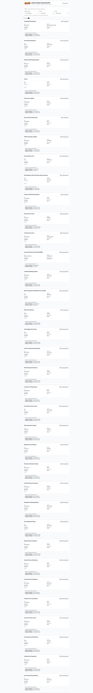
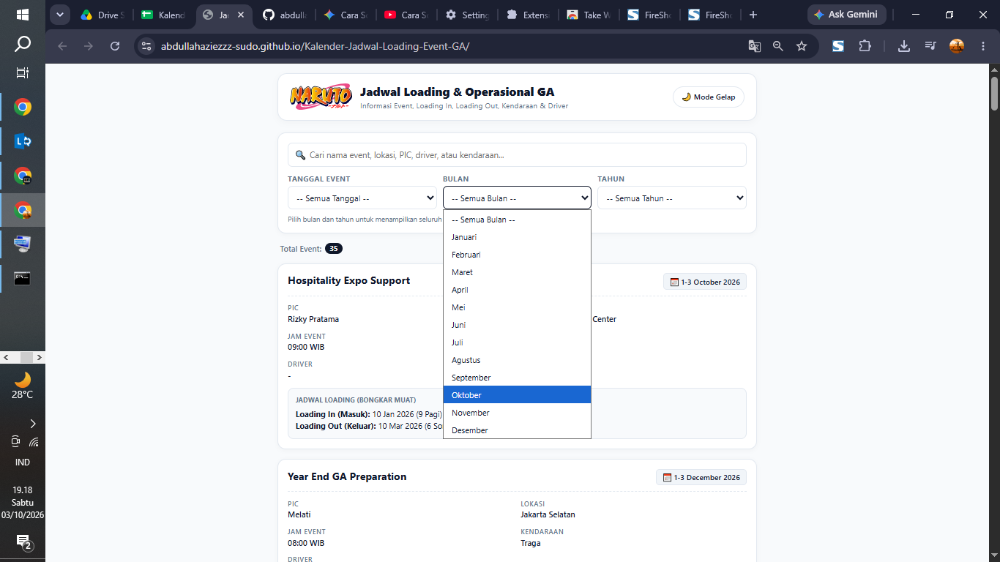
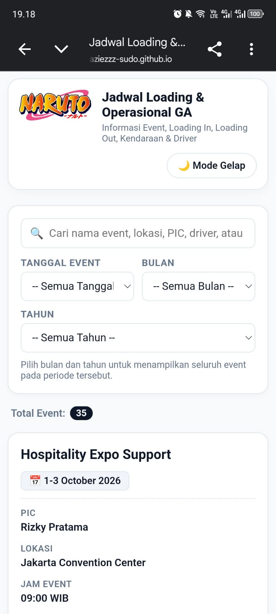
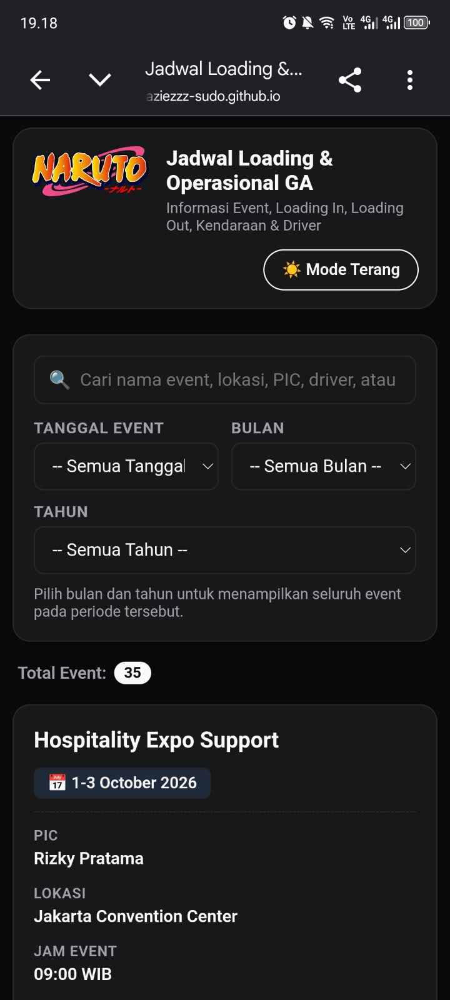

Event Search
Search by event name, location, PIC, driver, or vehicle.
From Email Threads to a Centralized Operational Interface
A lightweight web application for organizing and monitoring event schedules, loading activities, vehicles, and drivers in one accessible interface.
Full-page view of the Event Logistics Monitoring Web App.

In General Affairs operations, event schedules and loading activities were often communicated through Outlook group emails. When an event had been confirmed, important information such as the event schedule, location, PIC, loading time, vehicle, and driver needed to be accessed again by the operational team.
The challenge was not necessarily the absence of information. The information already existed, but it was distributed across email conversations and was not always convenient to retrieve when daily activities became busy.
I created a simple web-based operational dashboard that centralized this information into a single interface accessible from both laptops and smartphones.
The information existed — but accessing it again was not always convenient.
Event and loading details were communicated through Outlook group emails.
When information was needed again, the relevant email thread had to be found and reviewed.
Drivers and operational staff needed a more practical way to access confirmed event information.
The goal was to create a simple interface where operational information could be accessed from one place.
Turning an existing information flow into a more accessible operational interface.
The confirmed event information was organized in Google Sheets before being presented through the web interface.
Search, filters, and operational details in a single desktop view.

Focused on making operational information easier to find and use.
Search by event name, location, PIC, driver, or vehicle.
Filter information by date, month, and year.
View loading-in date and time associated with an event.
View loading-out date and time alongside the event.
Display vehicle and driver information directly in the event card.
Provide an alternative viewing mode for different environments.
Designed to work across laptop and smartphone screens.
The interface was designed for operational access from smartphones as well as laptops.


A lightweight stack selected for the operational use case.
I handled the initiative from identifying the operational problem through creating and testing the prototype.
The project originated from a General Affairs operational context. The version presented here uses simulated/dummy data and does not expose personal information or confidential company operational data.
The result was a working prototype of an operational event monitoring web application. Instead of relying entirely on previously discussed information inside email threads, event information could be presented through a centralized interface.
The prototype demonstrated how an existing operational workflow could be transformed into a more accessible digital interface using relatively lightweight tools.
This project started from a relatively simple operational problem: important information was available, but accessing it again was not always convenient.
Rather than treating the problem as a need for a large-scale system, I explored whether the existing information could be reorganized into a simpler workflow. The result was a prototype connecting Google Sheets, Google Apps Script, and a web interface.
The most valuable part of the project was going through the complete process:
It reinforced my interest in combining data management, administrative processes, and practical digital solutions to improve how information is organized and used.
END OF CASE STUDY
Explore the rest of my portfolio to see how I work with data management, spreadsheets, dashboards, and operational processes.